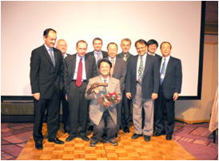
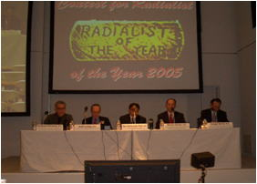

Radialist of the Year 2007
今年あなたが行ったBest TRI "Tough or Challenge case"
の症例報告
予選会：12月8日（土） 10:00〜11:00 日石ホール
決勝： 12月8日（土） 19:30〜 横浜ロイヤルパークホテル "鳳翔" Welcome Party会場にて
応募締め切り：10月30日
応募方法：鎌倉ライブデモンストレーション事務局までお名前、所属、演題名をメールにてお送り下さい
注意事項
発表時間は5分間（時間厳守） 制限時間を超えますと減点となります
（発表時間について事務局の手違いでご迷惑をお掛けしました お許し下さい）
発表は英語です
演題発表はご自身のPCで行って下さい
プレゼンテーションの内容は鎌倉ライブデモンストレーションに帰属します
演者のRegistration Feeは免除いたします
Radialist of the Year過去優勝者
2004年度 菅 好文 先生 （福岡ハートクリニック） 「TRI for 3VD involving LMT lesion」 2005年度 勝木 孝昭 先生 （自治医科大学） 「A case of TRI for Saphenous Vein Graft」 2006年度 竹下 聡 先生 （国立循環器病センター） 「A Winding Road」 2007年度 増田 尚巳 先生 （東海大学） 「Two Cases of KGT」
